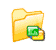
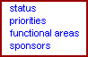

Projects from Settings pageBlacksmith Applications, www.blacksmithapps.com
ReportWriter/pm/administration/status/create_status.cfm?PageTitle=PROJECTS

The Status area of Project Settings allows you to view and edit existing project statuses, and to create new statuses. In addition, you can set statuses to active or inactive. You will not be able to make a status inactive if any active project has this status.
URL Properties: ReportWriter/pm/administration/status/create_status.cfm?PageTitle=PROJECTS: Status List Management
Last Updated by: The user id and date/time stamp shows who last updated this page.
Stored Records: Description, Status
Edit Records - Description, Definition, Availability
[Create New Entry] link
[save data] link
The Stored Records page displays the existing status records with their Description and Status (Active/Inactive).
Click a status description to display the record in the Edit Records area. In the Edit Records area, you can change the Description and Definition for a status, and you can change the Active/Inactive setting for a status (note that you cannot make a status inactive if any active project is using it).
If a status is inactive, you can click its link in the Stored Records area to display it in the Edit Records area, and a [delete data] link displays next to the [save data] link.
URL Properties: ReportWriter/pm/administration/Priority/create_Priority.cfm?PageTitle=PROJECTS: Priority List Management
Last Updated by: The user id and date/time stamp shows who last updated this page.
Stored Records: Description, Status, Critical
Edit Records - Description, Definition, Critical, Availability
Create New Entry link
save data link
The Stored Records page displays the existing priority records with their Description and Status (Active/Inactive).
Click a priority description to display the record in the Edit Records area. In the Edit Records area, you can change the Description and Definition for a priority, and you can change the Active/Inactive setting for a priority (note that you cannot make a priority inactive if any active project is using it).
If a priority is inactive, you can click its link in the Stored Records area to display it in the Edit Records area, and a [delete data] link displays next to the [save data] link.
URL Properties: ReportWriter/pm/administration/Functional_Area/create_far.cfm?PageTitle=PROJECTS: Functional Areas List Management
Last Updated by: The user id and date/time stamp shows who last updated this page.
Stored Records: Description, Status
Edit Records - Description, Definition, Availability
Create New Entry link
save data link
The Stored Records page displays the existing functional areas records with their Description and Status (Active/Inactive).
Click a functional area description to display the record in the Edit Records area. In the Edit Records area, you can change the Description and Definition for a functional area, and you can change the Active/Inactive setting for a functional area (note that you cannot make a status inactive if any active project is using it).
If a status is inactive, you can click its link in the Stored Records area to display it in the Edit Records area, and a [delete data] link displays next to the [save data] link.
URL Properties: ReportWriter/pm/administration/Sponsor/create_Sponsor.cfm?PageTitle=PROJECTS: Sponsors List Management
Last Updated by: The user id and date/time stamp shows who last updated this page.
Stored Records: Description, Status
Edit Records - Name, Title, Phone, Email, Availability
Create New Entry link
save data link
The Stored Records page displays the existing sponsor records with their Description and Status (Active/Inactive).
Click a sponsor description to display the record in the Edit Records area. In the Edit Records area, you can change the Description and Definition for a sponsor, and you can change the Active/Inactive setting for a sponsor (note that you cannot make a sponsor inactive if any active project is using it).
If a sponsor is inactive, you can click its link in the Stored Records area to display it in the Edit Records area, and a [delete data] link displays next to the [save data] link.